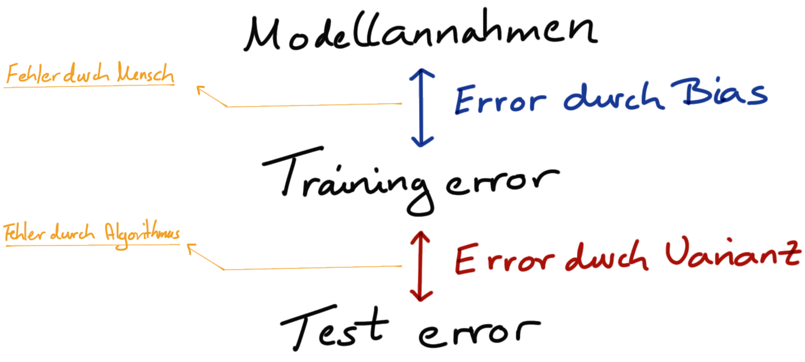
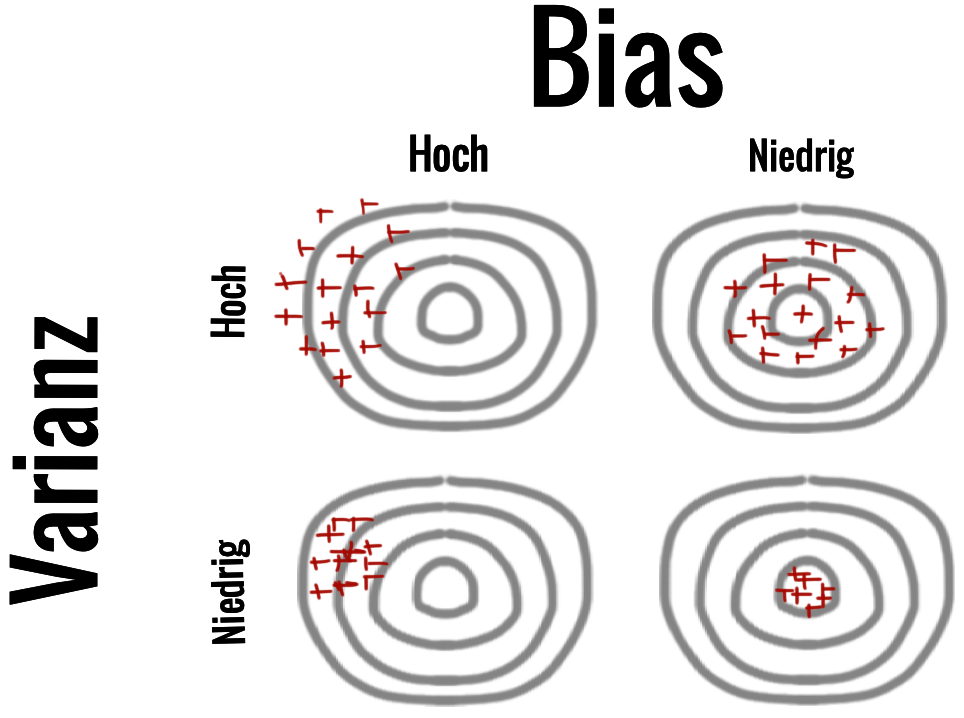

49 Grundlagen der Klassifikation
Version vom November 21, 2022 um 09:50:58

Dieses Kapitel dient als Einführung in die Klassifikation mit maschinellen Lernmethoden. Leider müssen wir wieder einiges an Worten lernen, damit wir überhaupt mit den Methoden anfangen können. Vieles dreht sich um die Aufbereitung der Daten, damit wir dann auch mit den Modellen anfangen können zu arbeiten. Ja ich meine wirklich Arbeiten, denn wir werden eher einen Prozess durchführen. Selten rechnet man einmal ein Modell und ist zufrieden. Meistens müssen wir noch die Modelle tunen um mehr aus den Modellen rauszuholen. Wir wollen bessere Vorhersagen mit einem kleineren Fehler erreichen. Das ganze können wir dann aber nicht in einem Schritt machen, sondern brauchen viele Schritte nacheinander. Damit müssen wir auch mir R umgehen können sonst ist der Prozess nicht mehr abzubilden.
49.1 Genutzte R Pakete für das Kapitel
Wir wollen folgende R Pakete in diesem Kapitel nutzen.
pacman::p_load(tidyverse, tidymodels, magrittr, conflicted)
conflict_prefer("select", "dplyr")
conflict_prefer("filter", "dplyr")
conflict_prefer("mutate", "dplyr")
conflict_prefer("extract", "magrittr")Am Ende des Kapitels findest du nochmal den gesamten R Code in einem Rutsch zum selber durchführen oder aber kopieren.
49.2 Daten
In dieser Einführung nehmen wir die infizierten Ferkel als Beispiel um einmal die verschiedenen Verfahren zu demonstrieren. Ich füge hier noch die ID mit ein, die nichts anderes ist, als die Zeilennummer. Dann habe ich noch die ID an den Anfang gestellt. Wir wählen auch nur ein kleines Subset aus den Daten aus, da wir in diesem Kapitel nur Funktion demonstrieren und nicht die Ergebnisse interpretieren.
pig_tbl <- read_excel("data/infected_pigs.xlsx") %>%
mutate(pig_id = 1:n()) %>%
select(pig_id, infected, age:crp) %>%
select(pig_id, infected, everything()) In Tabelle 52.1 siehst du nochmal einen Auschnitt aus den Daten. Wir haben noch die ID mit eingefügt, damit wir einzelne Beobachtungen nachvollziehen können.
| pig_id | infected | age | sex | location | activity | crp |
|---|---|---|---|---|---|---|
| 1 | 1 | 61 | male | northeast | 15.31 | 22.38 |
| 2 | 0 | 53 | male | northwest | 13.01 | 18.64 |
| 3 | 0 | 66 | female | northeast | 11.31 | 18.76 |
| 4 | 0 | 59 | female | north | 13.33 | 19.37 |
| 5 | 1 | 63 | male | northwest | 14.71 | 21.57 |
| 6 | 1 | 55 | male | northwest | 15.81 | 21.45 |
| … | … | … | … | … | … | … |
| 407 | 1 | 54 | female | north | 11.82 | 21.5 |
| 408 | 1 | 56 | male | west | 13.91 | 20.8 |
| 409 | 1 | 57 | male | northwest | 12.49 | 21.95 |
| 410 | 1 | 61 | male | northwest | 15.26 | 23.1 |
| 411 | 1 | 59 | female | north | 13.13 | 20.23 |
| 412 | 1 | 63 | female | north | 10.01 | 19.89 |
Gehen wir jetzt mal die Wörter und Begrifflichkeiten, die wir für das maschinelle Lernen später brauchen einmal durch.
49.3 What he say’s?
In diesem Teil des Skriptes werden wir wieder mit einer Menge neuer Begriffe konfrontiert. Deshalb steht hier auch eine Menge an neuen Worten drin. Leider ist es aber auch so, dass wir bekanntes neu bezeichnen. Wir tauchen jetzt ab in die Community der Klassifizierer und die haben dann eben die ein oder andere Sache neu benannt.
Kurze Referenz zu What he says?
Die gute nachticht zuerst, wir haben ein relativ festes Vokabular. Das heißt, wir springen nicht so sehr zwischen den Begrifflichkeiten wie wir es in den anderen Teilen des Skriptes gemacht haben. Du kennst die Modellbezeichnungen wie folgt.
\[ y \sim x \]
mit
- \(y\), als Outcome oder Endpunkt.
- \(x\), als Covariate oder Einflussvariable.
Das bauen wir jetzt um. Wir nennen in dem Bereich des maschinellen Lernen jetzt das \(y\) und das \(x\) wie folgt.
- \(y\) ist unser label, dafür gibt es kein deutsches Wort.
- \(x\) sind unsere features und mehrere Features bilden den feature space, dafür gibt es jeweils auch kein deutsches Wort.
Im folgenden Text werde ich also immer vom Label schreiben und dann damit das \(y\) links von dem ~ in der Modellgleichung meinen. Wenn ich dann von den Features schreibe, meine ich alle \(x\)-Variablen rechts von dem ~ in der Modellgleichung. Ja, daran muss du dich dann gewöhnen. Es ist wieder ein anderer sprachlicher Akzent in einem anderen Gebiet der Statistik.
49.4 Klassifikation vs. Regression
Wenn mich etwas aus der Bahn geworfen hat, dann waren es die Terme classification und regression im Kontext des maschinellen Lernens. Wenn ich von classification schreibe, dann wollen wir ein kategoriales Label vorhersagen. Das bedeutet wir haben ein \(y\) vorliegen, was nur aus Klassen bzw. Kategorien besteht. Im Zweifel haben wir dann ein Label mit \(0/1\) einträgen. Wenn mehr Klassen vorliegen, wird auch gerne von multiclass Klassifikation gesprochen.
Dazu steht im Kontrast der Term regression. In dem Kontext vom maschinellen Lernen meint regression die Vorhersage eines numerischen Labels. Das heißt, wir wollen die Körpergröße der Studierenden vorhersagen und nutzen dazu einen regression Klassifikator. Das ist am Anfang immer etwas verwirrend. Wir unterschieden hier nur die Typen der Label, sonst nichts. Wir fassen also wie folgt zusammen.
-
classification, wir haben ein Label bzw. \(y\) mit Kategorien. Nehmen wir einmal unser Ferkelbeispiel. In unserer Spalte
infectedsind die Ferkel infiziert \((1)\) oder nicht-infiziert daher gesund \((0)\). -
regression, wir haben ein Label bzw. \(y\) mit kontinuierlichen Werten. Unsere Ferkel haben ein Gewicht in \(kg\) und daher nehmen wir die Spalte
weight.
Wir brauchen die Begriffe, da wir später in den Algorithmen spezifizieren müssen, welcher Typ die Klassifikation sein soll.
49.5 Supervised vs. unsupervised
Der Unterschied zwischen einer suprvised Lernmethode oder Algorithmus ist, dass das Label bekannt ist. Das heißt, dass wir in unseren Daten eine \(y\) Spalte haben an der wir unser Modell dann trainieren können. Das Modell weiß also an was es sich optimieren soll. In Tabelle 49.2 sehen wir einen kleinen Datensatz in einem supervised Setting. Wir haben ein \(y\) in den Daten und können an diesem Label unser Modell optimieren.
| \(y\) | \(x_1\) | \(x_2\) | \(x_3\) |
|---|---|---|---|
| 1 | 0.2 | 1.3 | 1.2 |
| 0 | 0.1 | 0.8 | 0.6 |
| 1 | 0.3 | 2.3 | 0.9 |
| 1 | 0.2 | 9.1 | 1.1 |
In der Tabelle 49.3 sehen wir als Beispiel einen Datensatz ohne eine Spalte, die wir als Label nutzen können. Nazürlich haben wir in echt dann keine freie Spalte. Ich habe das einmal so gebaut, damit du den Unterschied besser erkennen kannst. Beim unsuoervised Lernen muss der Algorithmus sich das Label selber bauen. Wir müssen meist vorgeben, wie viele Gruppen wir im Label erwarten würden. Dann können wir den Algorithmus starten.
| \(x_1\) | \(x_2\) | \(x_3\) | |
|---|---|---|---|
| \(\phantom{0}\) | 0.2 | 1.3 | 1.2 |
| 0.1 | 0.8 | 0.6 | |
| 0.3 | 2.3 | 0.9 | |
| 0.2 | 9.1 | 1.1 |
Wir haben sehr oft eine superised Setting vorliegen. Aber wie immer, du wirst vielleicht auch Cluster bilden wollen und dann ist das unsupervised Lernen eine Methode, die du gut nutzen kannst.
49.6 Bagging
Das Wort Bagging steht für bootstrap aggregating und ist eine Methode, um Vorhersagen aus verschiedenen Modellen zu kombinieren. Dabei müssen alle Modelle mit dem gleichen Algorithmus laufen, können aber auf verschiedenen Datensätzen oder aber Variablensätzen zugreifen. Häufig haben die Modelle eine hohee Varianz in der Vorhersage und wir nutzen dann Bagging um die Modelle miteinader zu kombinieren und dadurch die Varianz zu verringern. Die Ergebnisse der Modelle werden dann im einfachsten Fall gemittelt. Das Ergebnis jeder Modellvorhersage geht mit gleichem Gewicht in die Vorhersage ein. Wir haben auch noch andere Möglichkeiten, aber du kannst dir Vorstellen wir rechnen verschiedene Modelle \(k\)-mal und bilden dann ein finales Modell in dem wir alle \(k\)-Modelle zusammenfassen. Wie wir die Zusammenfassung rechnen, ist dann immer wieder von Fall zu Fall unterschiedlich. Wir erhalten am Ende einen Ensemble Klassifizierer, da ja ein Ensemble von Modellen zusammengefasst wird.
49.7 Bias vs. Varianz
- Bias: Der Bias (deu. Verzerrung) unseres Modells hat mit den Annahmen zu tun, die wir über die Daten machen. Im Weiteren wie gut das Modell zu den Daten passt, wenn das Modell trainiert wird. Ein Modell mit einem hohen Bias passt nicht gut zu den Trainingsdaten, hat eine begrenzte Flexibilität oder ist extrem einfach für die vorliegenden Daten. Wenn ein Modell zu simpel ist führt es häufig zu einem hohen Trainingsfehler. Das Label der Traingsdaten wird daher nicht gut wiedergegeben.
- Varianz: Die Varianz unseres Modells hat damit zu tun, wie es seine Ergebnisse in Abhängigkeit von den Traingsdaten variiert. Ein Modell mit hoher Varianz kann sich gut an die Trainingsdaten anpassen und hat daher Probleme bei der Verallgemeinerung auf die ungesehene Testdaten, was zu einem hohen Testfehler führt.

\[ error = variance + bias + \epsilon \]



https://towardsdatascience.com/quick-bias-variance-trade-off-d4895b126b08
49.8 Boosting
https://medium.com/greyatom/a-quick-guide-to-boosting-in-ml-acf7c1585cb5
https://towardsdatascience.com/boosting-algorithms-explained-d38f56ef3f30
https://howtolearnmachinelearning.com/articles/boosting-in-machine-learning/
49.9 Recipes
Du findest hier die Introduction to recipes und dann eine Idee wie recipes funktionieren mit Preprocess your data with recipes.
- Erstellen des Modells (lr_mod),
- ein Vorverarbeitungsrezept (eng. preprocessing) erstellt (flights_rec),
- das Modell und das Rezept gebündelt (flights_wflow), und
- unseren Workflow mit einem einzigen Aufruf von fit() trainiert.
49.10 Problem der fehlenden Werte
Im Kapitel 51 erfährst du, wie du mit den fehlenden Werten im maschinellen Lernen umgehst. Im Kapitel 38 mehr über die Hintergründe und die Verfahren.
Ein wichtiger Punkt ist bei der Nutzung von maschinellen Lernen, dass wir keine fehlenden Beobachtungen in den Daten haben dürfen. Es darf kein einzelner Wert fehlen. Dann funktionieren die Algorithmen nicht und wir erhalten eine Fehlermeldung. Deshalb ist es die erste Statistikerpflicht darauf zu achten, dass wir nicht so viele fehlenden Werte in den Daten haben. Das ist natürlich nur begrenzt möglich. Wenn wir auf die Gummibärchendaten schauen, dann wurden die Daten ja von mir mit Erhoben. Dennoch haben wir viele fehlende Daten mit drin, da natürlich Studierende immer was eingetragen haben. Wenn du wissen willst, wie du mit fehlenden Werten umgehst, dann schaue einmal dazu das Kapitel 38 an. Wir gehen hier nicht nochmal auf alle Verfahren ein, werden aber die Verfahren zur Imputation von fehlenden Werten dann am Beispiel der Gummibärchendaten anwenden. Müssen wir ja auch, sonst könnten wir auch die Daten nicht für maschinelle Lernverfahren nutzen.
49.11 Normalisierung
Im Kapitel 51 erfährst du, wie du die Normalisierung von Daten im maschinellen Lernen anwendest. Im Kapitel 17 mehr über die Hintergründe und die Verfahren.
Unter Normalisierung der Daten fassen wir eigentlich ein preprocessing der Daten zusammen. Wir haben ja unsere Daten in einer ursprünglichen Form vorliegen. Häufig ist diese Form nicht geeignet um einen maschinellen Lernalgorithmus auf diese ursprüngliche Form der Daten anzuwenden. Deshalb müssen wir die Daten vorher einmal anpassen und in eine geleiche Form über alle Variablen bringen. Was meine ich so kryptisch damit? Schauen wir uns einmal in der Tabelle 49.4 ein Beispiel für zu normalisierende Daten an.
| \(y\) | \(x_1\) | \(x_2\) | \(x_3\) |
|---|---|---|---|
| 1 | 0.2 | 1430 | 23.54 |
| 0 | 0.1 | 1096 | 18.78 |
| 1 | 0.4 | 2903 | 16.89 |
| 1 | 0.2 | 7861 | 12.98 |
Warum müssen diese Daten normalisiert werden? Wir haben mit \(x_1\) eine Variable vorliegen, die im Iterval \([0;1]\) liegt. Die Variable \(x_2\) liegt in einem zehntausendfach größeren Wertebereich. Die Werte der Variable \(x_3\) ist auch im Vergleich immer noch hundertfach im Wertebereich unterschiedlich. Dieser großen Unterschiede im Wertebereich führen zu fehlern bei Modellieren. Wir können hierzu das Kapitel 17 betrachten. Dort werden gängige Transformationen einmal erklärt. Wir gehen hier nicht nochmal auf alle Verfahren ein, sondern konzentrieren uns auf die häufigsten Anwendungen.